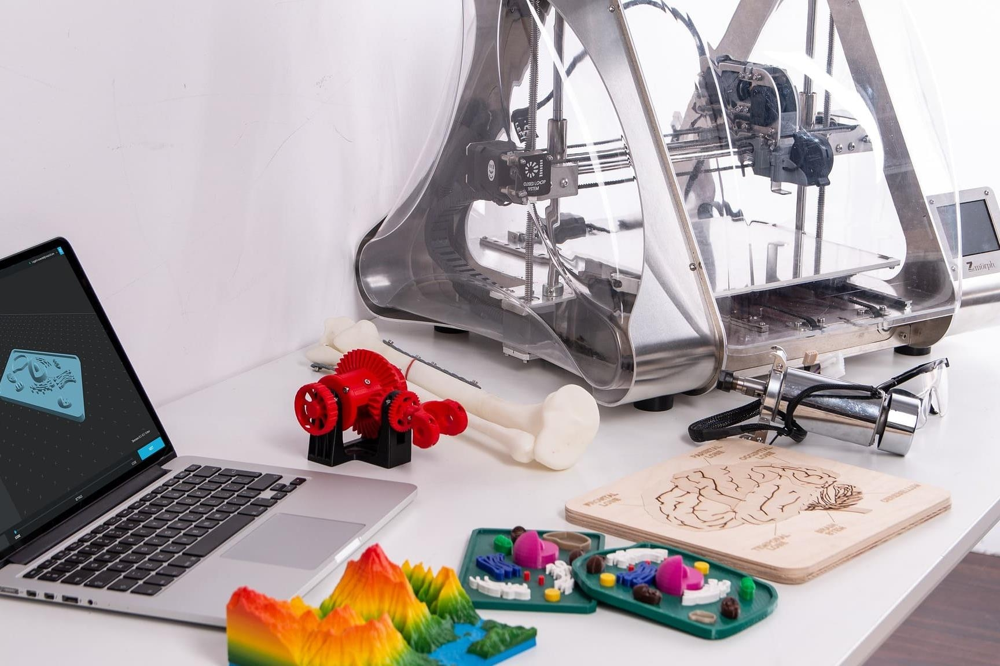

Інженер з 3D-друку займається технічним супроводом, роботою з обладнанням, програмним забезпеченням, створенням 3D-моделей. Фахівцю необхідно мати глибокі знання про інженерії, програмуванні, математики. Професію відносять до спеціальностей майбутнього.
Професія інженер по 3D-друку з'явилася зовсім недавно, але її цінність і соціальну значимість складно недооцінити. За допомогою 3D-друку вже сьогодні створюються унікальні вироби, що використовуються в сфері медицини і промисловості. Математики і інженери постійно розробляють досконаліші технології, що дозволяють створювати за допомогою цього виду друку заготовки, анатомічні моделі, сувеніри, будинки, протези. А принтери, що використовуються для друку біоматеріалами, дозволяють створювати людську шкіру, що стало проривом в лікуванні ран, травм, прискоренні реабілітаційного періоду.
Повернутися на головну сторінку
Автор: Черненко Єлизавета